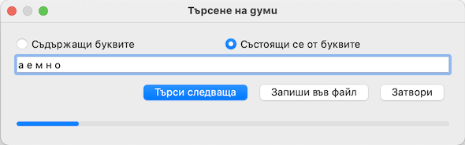

Настолното приложение brammar-bg представя върху настолен компютър базата данни от онлайн проекта Отворен речник на българския език dic.vanyog.com.
Представяне на програмата в Интернет може да намерите на страница vanyog.com/index.php?pid=38.
Настоящата система за помощ, описва функционалните възможности на приложението и примери за полезно използване на тези възможности.
Интерфейсът на приложението се състои от главно меню, бутони, падащи списъци и полета за представяне не списъци и текст, разположени върху главния прозорец.
Някои от действията изпълнявани с щракване върху бутони имат за еквивалент команди от менюто и се стартират и с клавишни комбинации.
Показвания в момента списък от основни или всички форми на думи се записва във външен файл. Създаденият файл може да се използва, например, в програми за проверка на правописа.
Тази команда в момента не се използва.
В момента тази команда отваря директория data, в която се намират .cvs файловете с данни.
С цел по-бързо стартиране, подредените по азбучен ред основни или всички форми на думи се записват във файлове, които се наричат индексни файлове и се генерират наново при промени в състава на речника. Ако по някаква причина след добавяне на думи тези думи не се появят в списъците, се използва тази команда, която изтрива индексните файлове и след затваряне и ново отваряне на програмата, същите се генерират наново.
В старите безплатни версии на IDI Spell Checker базата данни с думи се състоеше от текстови файлове. От страница yavka.net/softs, например, още може да се изтегли версия 2.53. След изтегляне и разархивиране, файлът alt/bgtype2/_D2_ungrouped_sorted.txt може да се изкопира и зареди в grammar-bg. Програмирането на функцията не е завършено и затова командата в менюто не е активна.
Затваряне на програмата
При изпълнение на командата се показва диалог за търсене на думи съдържащи или състоящи се от зададени букви:
